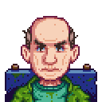
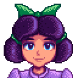

Alex
Alex ama esportes e passar o tempo na praia. Ele é um pouco arrogante e conta a todos que ele irá ser um atleta profissional. Seria sua arrogância apenas uma fachada para mascarar sua devastadora insegurança? Estaria ele usando seus sonhos com esportes para preencher o vazio deixado pelo desaparecimento de seus pais? Ou seria ele apenas um jovem tentando “parecer legal?”
Alex
Alex ama esportes e passar o tempo na praia. Ele é um pouco arrogante e conta a todos que ele irá ser um atleta profissional. Seria sua arrogância apenas uma fachada para mascarar sua devastadora insegurança? Estaria ele usando seus sonhos com esportes para preencher o vazio deixado pelo desaparecimento de seus pais? Ou seria ele apenas um jovem tentando “parecer legal?”
 Elliot
Elliott mora sozinho em uma cabana na praia. Ele é um escritor que sonha em, um dia, escrever um romance magnífico. Ele é sentimental e “romântico” com tendências a fazer poesias sobre flores. Quando ele pode pagar, gosta de uma bebida forte no Saloon Fruta Estrelar. Poderia um humilde fazendeiro como você ser a inspiração que Elliott procura? Só existe um jeito de descobrir…
Elliot
Elliott mora sozinho em uma cabana na praia. Ele é um escritor que sonha em, um dia, escrever um romance magnífico. Ele é sentimental e “romântico” com tendências a fazer poesias sobre flores. Quando ele pode pagar, gosta de uma bebida forte no Saloon Fruta Estrelar. Poderia um humilde fazendeiro como você ser a inspiração que Elliott procura? Só existe um jeito de descobrir…
 Harvey
Harvey é o médico da cidade. Ele é um pouco velho para um solteiro, mas tem um grande coração amável e uma posição respeitada na comunidade. Ele mora em um pequeno apartamento em cima da clínica, mas gasta grande parte do seu tempo trabalhando. Você consegue sentir uma tristeza nele, como se houvesse algo que ele não diz.
Harvey
Harvey é o médico da cidade. Ele é um pouco velho para um solteiro, mas tem um grande coração amável e uma posição respeitada na comunidade. Ele mora em um pequeno apartamento em cima da clínica, mas gasta grande parte do seu tempo trabalhando. Você consegue sentir uma tristeza nele, como se houvesse algo que ele não diz.
 Sam
Sam é um cara extrovertido e amigável que está repleto de energia jovem. Ele toca guitarra e bateria, e quer começar uma banda com Sebastian assim que eles tiverem musicas juntos. Entretanto, ele tem o hábito de começar várias coisas ao mesmo tempo e não terminá-las. Sam está um pouco estressado com a volta repentina de seu pai, que esteve fora por anos devido ao seu trabalho.
Sam
Sam é um cara extrovertido e amigável que está repleto de energia jovem. Ele toca guitarra e bateria, e quer começar uma banda com Sebastian assim que eles tiverem musicas juntos. Entretanto, ele tem o hábito de começar várias coisas ao mesmo tempo e não terminá-las. Sam está um pouco estressado com a volta repentina de seu pai, que esteve fora por anos devido ao seu trabalho.
 Sebastian
Sebastian é um rebelde solitário que mora no porão dos seus pais. Ele é o meio-irmão mais velho da Maru, e sente que sua irmã ganha toda a atenção e adoração, enquanto ele é largado para apodrecer na escuridão. Ele tende a ficar muito vidrado em jogos de computador, quadrinhos, e livros de ficção científica, e às vezes passa muito tempo atrás desses hobbies sozinho em seu quarto. Ele pode ser um pouco hostil com pessoas que ele não conhece. Poderia um(a) encantador(a) novo(a) fazendeiro(a) cultivar a terra infértil do seu coração? Quem sabe?
Sebastian
Sebastian é um rebelde solitário que mora no porão dos seus pais. Ele é o meio-irmão mais velho da Maru, e sente que sua irmã ganha toda a atenção e adoração, enquanto ele é largado para apodrecer na escuridão. Ele tende a ficar muito vidrado em jogos de computador, quadrinhos, e livros de ficção científica, e às vezes passa muito tempo atrás desses hobbies sozinho em seu quarto. Ele pode ser um pouco hostil com pessoas que ele não conhece. Poderia um(a) encantador(a) novo(a) fazendeiro(a) cultivar a terra infértil do seu coração? Quem sabe?
 Shane
“Alugo o quarto da Marnie por um bom preço. É pequeno, mas não posso reclamar. Se eu pudesse começar a minha vida novamente, provavelmente criaria galinhas. Só animais criados ao ar livre, é claro.”
Shane
“Alugo o quarto da Marnie por um bom preço. É pequeno, mas não posso reclamar. Se eu pudesse começar a minha vida novamente, provavelmente criaria galinhas. Só animais criados ao ar livre, é claro.” — Shane
Shane é um aldeão da Vila Pelicanos que está quase sempre bravo e infeliz, e sofre de depressão e alcoolismo. Porém, sua atitude com o jogador começa a mudar caso este decida fazer amizade com ele.
 Abigail
Abigail mora na loja com seus pais. Às vezes discute com sua mãe que se preocupa com o "estilo de vida alternativo" de Abigail. Sua mãe diz o seguinte: "Eu gostaria que Abby se vestisse mais apropriadamente e parasse de tingir seu cabelo de azul. Ela tem uma maravilhosa cor de cabelo natural, assim como sua avó. Ah, e eu gostaria que ela encontrasse alguns interesses saudáveis, em vez deste absurdo oculto em que ela está. "Você pode encontrar Abigail sozinha no cemitério, ou talvez em uma tempestade a procura de sapos.”
Abigail
Abigail mora na loja com seus pais. Às vezes discute com sua mãe que se preocupa com o "estilo de vida alternativo" de Abigail. Sua mãe diz o seguinte: "Eu gostaria que Abby se vestisse mais apropriadamente e parasse de tingir seu cabelo de azul. Ela tem uma maravilhosa cor de cabelo natural, assim como sua avó. Ah, e eu gostaria que ela encontrasse alguns interesses saudáveis, em vez deste absurdo oculto em que ela está. "Você pode encontrar Abigail sozinha no cemitério, ou talvez em uma tempestade a procura de sapos.”
 Emily
“Eu só estou trabalhando com o Gus para sobreviver... mas a minha verdadeira paixão é alfaiataria. Eu fiz essas roupas a partir do zero.”
Emily
“Eu só estou trabalhando com o Gus para sobreviver... mas a minha verdadeira paixão é alfaiataria. Eu fiz essas roupas a partir do zero.” — Emily
Emily ama fazer suas próprias roupas, mas pode ser difícil encontrar o tecido na cidade. Entre seus presentes favoritos estão justamente o tecido e a lã.
 Haley
Ser rica e popular durante todo o ensino médio tornou Haley um pouco convencida e egoísta. Ela tem uma tendência de julgar as pessoas por razões superficiais. Mas é muito tarde para ela descobrir o verdadeiro significado da vida? Existe uma jovem mulher engraçada, mente aberta escondida embaixo de toda essa beleza?
Haley
Ser rica e popular durante todo o ensino médio tornou Haley um pouco convencida e egoísta. Ela tem uma tendência de julgar as pessoas por razões superficiais. Mas é muito tarde para ela descobrir o verdadeiro significado da vida? Existe uma jovem mulher engraçada, mente aberta escondida embaixo de toda essa beleza? Haley mora com sua irmã Emily, e juntas cuidam da casa de seus pais, que tem viajado pelo mundo nos últimos dois anos. Haley é amiga de Alex. Durante a Dança das Flores, Haley e Alex dançarão juntos se o jogador não dançar com nenhum dos dois.
 Leah
Leah vive sozinha em uma pequena cabana fora da vila. Ela ama passar o tempo fora de casa, coletando uma refeição selvagem ou simplesmente apreciando os presentes da estação. Ela é uma artista talentosa com um grande portfólio... ainda assim ela é muito nervosa para mostrá-lo para o público. Talvez você possa dar à ela um pequeno empurrãozinho, e fazer com que ela crie coragem?
Leah
Leah vive sozinha em uma pequena cabana fora da vila. Ela ama passar o tempo fora de casa, coletando uma refeição selvagem ou simplesmente apreciando os presentes da estação. Ela é uma artista talentosa com um grande portfólio... ainda assim ela é muito nervosa para mostrá-lo para o público. Talvez você possa dar à ela um pequeno empurrãozinho, e fazer com que ela crie coragem?
 Maru
Criada por uma mãe carpinteira e o pai cientista, Maru adquiriu uma paixão por criar ferramentas desde jovem. Quando ela não está em seu quarto, brincando com máquinas e ferramentas, às vezes ela trabalha na clínica local. Amigável, extrovertida e ambiciosa, Maru seria um golpe de sorte para um humilde recém chegado como você… Você ganhará o coração dela, ou deixará ela escapar de você e desaparecer para sempre?
Maru
Criada por uma mãe carpinteira e o pai cientista, Maru adquiriu uma paixão por criar ferramentas desde jovem. Quando ela não está em seu quarto, brincando com máquinas e ferramentas, às vezes ela trabalha na clínica local. Amigável, extrovertida e ambiciosa, Maru seria um golpe de sorte para um humilde recém chegado como você… Você ganhará o coração dela, ou deixará ela escapar de você e desaparecer para sempre?
 Penny
Penny mora com sua mãe, Pam, num pequeno trailer perto do rio. Enquanto Pam está fora bebendo no salão, Penny silenciosamente costuma fazer suas tarefas no quarto escuro e abafado que ela é forçada a chamar de lar. Ela é tímida e modesta, sem nenhuma outra grande ambição na vida a não ser se acomodar e criar uma família. Ela gosta de cozinhar (embora suas habilidades sejam questionáveis) e de ler livros da biblioteca local.
Penny
Penny mora com sua mãe, Pam, num pequeno trailer perto do rio. Enquanto Pam está fora bebendo no salão, Penny silenciosamente costuma fazer suas tarefas no quarto escuro e abafado que ela é forçada a chamar de lar. Ela é tímida e modesta, sem nenhuma outra grande ambição na vida a não ser se acomodar e criar uma família. Ela gosta de cozinhar (embora suas habilidades sejam questionáveis) e de ler livros da biblioteca local.
 Anão
“Há muito tempo, meu povo conhecia os segredos da tecnologia avançada. A evidência arqueológica prova isso. Mas eu me pergunto de onde veio? E para onde foi tudo? Acho que algumas perguntas nunca serão respondidas ...”
Anão
“Há muito tempo, meu povo conhecia os segredos da tecnologia avançada. A evidência arqueológica prova isso. Mas eu me pergunto de onde veio? E para onde foi tudo? Acho que algumas perguntas nunca serão respondidas ...”— Anão
O Anão é um aldeão da vila que mora nas minas. Inicialmente o caminho é bloqueado por uma rocha inquebrável, logo dentro da entrada. Depois de atualizar para uma picareta de aço, a pedra pode ser quebrada. Uma Bombinha também funciona. O Anão começará a falar na língua dos anões, que é ilegível pelo jogador. Para entender o anão, você deve adquirir os 4 pergaminhos dos anões de dentro das minas. Depois de doá-los para o Museu, Gunther lhe dará um rolo de linguagem para usar o que lhe permite entender as falas do Anão. Você não pode fazer compras na loja do Anão ou afetar a amizade com ele até você entender anão.
O gênero do Anão é considerado como "indefinido" nos arquivos do jogo. Não pode-se dizer que ele é homem ou mulher.
 Caroline
“Meu marido é dono do armazém daqui. Você conheceu minha filha, Abigail? Ela é a branquinha, do cabelo roxo.”
Caroline
“Meu marido é dono do armazém daqui. Você conheceu minha filha, Abigail? Ela é a branquinha, do cabelo roxo.”— Caroline
Caroline é casada com Pierre e eles vivem com sua filha Abigail no Armazém do Pierre.
Jodi diz que Caroline é sua melhor amiga, e que ela pode contar qualquer coisa para ela. As duas também frequentam aulas de ginástica junto com outras mulheres da Vila Pelicano, como Marnie, Emily e Robin.
 Clint
“É muito melhor trabalhar ao ar livre do que passar o dia todo ao lado da fornalha quente. Sou um ferreiro apenas porque meu pai me obrigou.”
Clint
“É muito melhor trabalhar ao ar livre do que passar o dia todo ao lado da fornalha quente. Sou um ferreiro apenas porque meu pai me obrigou.”— Clint
Clint frequentemente visita o saloon para se socializar com Emily, por quem ele está apaixonado, mas ele fica muito nervoso para se aproximar dela. Em um dialogo com Gus ele indica suspeitar da paixão de Clint mas decidiu não lhe perguntar nada sobre isso. No quarto de Clint há uma nota que confirma seus sentimentos, na qual está escrito:
“Querida Emily, sei que você pensa em mim como amigo. É minha culpa: sou envergonhado demais. Por isso nunca vou ter coragem de dizer a verdade. Por isso estou escrevendo esta carta para mim mesmo, que certamente vou amassar e jogar em um canto.”
 Demetrius
Demetrius é casado com Robin e mora com sua filha Maru e o enteado Sebastian. Maru é sua filha com Robin, e Sebastian é filho de Robin de um relacionamento anterior. Supõe-se que Demetrius é o segundo marido de Robin, porque há 2 livros na estante do quarto do casal intitulados "Maximizando o Seu Segundo Casamento" e "Dicas práticas para padrastos de segunda viagem". Demetrius é muito protetor de Maru, como mostrado no evento de dois corações dela.
Demetrius
Demetrius é casado com Robin e mora com sua filha Maru e o enteado Sebastian. Maru é sua filha com Robin, e Sebastian é filho de Robin de um relacionamento anterior. Supõe-se que Demetrius é o segundo marido de Robin, porque há 2 livros na estante do quarto do casal intitulados "Maximizando o Seu Segundo Casamento" e "Dicas práticas para padrastos de segunda viagem". Demetrius é muito protetor de Maru, como mostrado no evento de dois corações dela.
 Evelyn
Evelyn viveu na Vila Pelicanos toda a sua vida. Sempre esperançosa e otimista, "Vovó" passa seus dias cuidando dos jardins da cidade, assando os biscoitos que são sua assinatura, e relembrando o passado vibrante de Stardew Valley.
Evelyn
Evelyn viveu na Vila Pelicanos toda a sua vida. Sempre esperançosa e otimista, "Vovó" passa seus dias cuidando dos jardins da cidade, assando os biscoitos que são sua assinatura, e relembrando o passado vibrante de Stardew Valley.Evelyn é casada com George, e mora com seu neto Alex. A mãe falecida de Alex Clara era filha de Evelyn.
Na mesa de cabeceira de Evelyn pode se encontrar uma carta com o título Mamãe. Lê-se na nota:
“Mamãe, se você estiver lendo isso, significa que parti desse mundo. Sinto muito por você ter que passar por isso. Saiba que amo vocês dois. Não fique triste, estou com Ioba agora. Meu pedido final: tome conta do Alex. Ele precisa de uma família, alguém estável. Ele é um bom garoto. Com amor, Clara.”
Esta é uma possível carta de sua filha, Clara, que é mãe de Alex. Clara faleceu e deixou Alex para viver com Evelyn e George.
 Feiticeiro
O feiticeiro estuda o mundo do espírito de sua torre na floresta Cinzaseiva. Ele é fluente em muitas línguas elementares.
Feiticeiro
O feiticeiro estuda o mundo do espírito de sua torre na floresta Cinzaseiva. Ele é fluente em muitas línguas elementares.O Feiticeiro, também conhecido como M. Rasmodeu, é um aldeão que mora na Torre do mago no extremo oeste da Floresta Cinzaseiva.

George
“Meu avô era um fazendeiro. É uma profissão respeitável. Se eu não fosse tão velho eu iria a sua fazenda e lhe mostraria uma coisa ou duas ...”
— George
George é um aldeão que mora na Vila Pelicanos com uma personalidade tanto quanto rabugenta, porém desenvolvendo uma amizade ele se torna mais confortável com a presença do jogador. Ele mora na Estrada do Rio, nº 1 com sua esposa, Evelyn, e seu neto, Alex.
— George
George é um aldeão que mora na Vila Pelicanos com uma personalidade tanto quanto rabugenta, porém desenvolvendo uma amizade ele se torna mais confortável com a presença do jogador. Ele mora na Estrada do Rio, nº 1 com sua esposa, Evelyn, e seu neto, Alex.
 Gus
“Pam e Clint vêm para o salão quase todas as noites. Eu provavelmente perderia o negócio se eles parassem de vir. Portanto, certifique-se de que você não irá afastá-los!”
Gus
“Pam e Clint vêm para o salão quase todas as noites. Eu provavelmente perderia o negócio se eles parassem de vir. Portanto, certifique-se de que você não irá afastá-los!”— Gus
Gus é um aldeão que mora e trabalha no Salão na Vila Pelicanos. Ele é dono do estabelecimento.
Gus emprega Emily em tempo parcial para ajudar no salão. Pam também é uma cliente frequente, e muitas vezes pode ser vista conversando com Gus.

Jas
Jas é uma aldeã que mora fora da Vila Pelicanos, mais precisamente, no Rancho da Marnie. Ela é uma menininha, e muitas vezes pode ser encontrada com seu melhor amigo Vincent.
Jas vive com sua tia Marnie e seu padrinho Shane no rancho fora da cidade. Ela é frequentemente vista junto de seu amigo Vincent, que é o único morador da cidade próximo da idade dela. Penny tira um tempo para dar aula para Vincent e Jas no museu, já que não há nenhuma escola na cidade. Os pais de Jas morreram de causas desconhecidas.
Jas vive com sua tia Marnie e seu padrinho Shane no rancho fora da cidade. Ela é frequentemente vista junto de seu amigo Vincent, que é o único morador da cidade próximo da idade dela. Penny tira um tempo para dar aula para Vincent e Jas no museu, já que não há nenhuma escola na cidade. Os pais de Jas morreram de causas desconhecidas.
 Jodi
Jodi é uma aldeã que mora na Vila Pelicanos. Ela vive na Rua do Salgueiro, nº 1 com seu marido Kent (que está ausente servindo no exército até o primeiro dia da Primavera no ano 2) e seus dois filhos, Sam e Vincent.
Jodi
Jodi é uma aldeã que mora na Vila Pelicanos. Ela vive na Rua do Salgueiro, nº 1 com seu marido Kent (que está ausente servindo no exército até o primeiro dia da Primavera no ano 2) e seus dois filhos, Sam e Vincent.Jodi é casada com Kent e juntos eles têm dois filhos, Sam e Vincent.
Jodi menciona que Caroline é sua melhor amiga e que conta tudo para ela. Elas também frequentam juntas as aulas de aeróbica nas terças, juntamente com algumas das outras mulheres da Vila Pelicanos.
 Kent
Kent é um aldeão que mora na Vila Pelicanos. Ele está ausente servindo o exército durante o primeiro ano e retorna para morar na cidade durante a primavera do ano dois. Referências a ele no primeiro ano incluem o conteúdo da gaveta no quarto de Jodi e diálogos de Sam e Vincent.
Kent
Kent é um aldeão que mora na Vila Pelicanos. Ele está ausente servindo o exército durante o primeiro ano e retorna para morar na cidade durante a primavera do ano dois. Referências a ele no primeiro ano incluem o conteúdo da gaveta no quarto de Jodi e diálogos de Sam e Vincent.Kent é casado com Jodi e juntos eles têm dois filhos, Sam e Vincent.
 Krobus
“...Você encontrou outros como eu nas minas? Desculpe se eles foram hostis com você. Sabe, nós aprendemos a temer humanos... houve muitos... encontros desagradáveis.”
Krobus
“...Você encontrou outros como eu nas minas? Desculpe se eles foram hostis com você. Sabe, nós aprendemos a temer humanos... houve muitos... encontros desagradáveis.”— Krobus
Krobus não pode viajar para fora no sol, assim ele pode sempre ser encontrado nos esgotos.
 Leo
Leo é um menino que inicialmente vive na Ilha Gengibre. Seus pais se perderam no mar e ele considera os papagaios que habitam a ilha sua família. Inicialmente, ele é muito tímido para falar com o jogador, até que o jogador "faça amizade" com os papagaios da ilha, dando-lhes Noz Dourada. Isso é feito dando 10 Nozes Douradas ao primeiro papagaio do lado de fora da tartaruga.
Leo
Leo é um menino que inicialmente vive na Ilha Gengibre. Seus pais se perderam no mar e ele considera os papagaios que habitam a ilha sua família. Inicialmente, ele é muito tímido para falar com o jogador, até que o jogador "faça amizade" com os papagaios da ilha, dando-lhes Noz Dourada. Isso é feito dando 10 Nozes Douradas ao primeiro papagaio do lado de fora da tartaruga.Quando o jogador atinge seis corações de amizade com Leo, ele se muda para o continente de Stardew Valley, onde se torna amigo de Linus, Jas e Vincent. Tem uma cena do jogo onde mostra que Leo tem uma queda por Jas.
 Lewis
Lewis é o prefeito da Vila Pelicanos. Junto com Robin, ele te dá as boas-vindas quando você se muda para o Vale e explica um pouco sobre a vida na fazenda. Sabe-se que Lewis tem algum tipo de relação com Marnie, pois os shorts que ele perdeu são encontrados no quarto dela. Além disso, um bilhete pode ser encontrado no quarto dele no canto inferior esquerdo em uma prateleira debaixo de uma caneca de café, que acredita-se ser de Marnie. O bilhete é assinado com "-M".
Lewis
Lewis é o prefeito da Vila Pelicanos. Junto com Robin, ele te dá as boas-vindas quando você se muda para o Vale e explica um pouco sobre a vida na fazenda. Sabe-se que Lewis tem algum tipo de relação com Marnie, pois os shorts que ele perdeu são encontrados no quarto dela. Além disso, um bilhete pode ser encontrado no quarto dele no canto inferior esquerdo em uma prateleira debaixo de uma caneca de café, que acredita-se ser de Marnie. O bilhete é assinado com "-M".
 Linus
“Você pode aprender a sobreviver em um ambiente selvagem. Eu aprendi. Acho que todos temos uma vontade escondida de voltar à natureza. Só é difícil tomar coragem.”
Linus
“Você pode aprender a sobreviver em um ambiente selvagem. Eu aprendi. Acho que todos temos uma vontade escondida de voltar à natureza. Só é difícil tomar coragem.”— Linus
Linus se considera, no geral, excluído pelos outros moradores da cidade. Ele não confia nas pessoas e não parece considerar ninguém na cidade seu amigo, devido ao fato de a maioria da pessoas não o tratar bem. Em um certo ponto, Linus diz ao jogador que sua tenda já foi destruída antes. Durante Festivais, ele geralmente pode ser encontrado sozinho e longe dos outros. Porém, com base em diálogos encontrados nos arquivos do jogo, Linus é amigo do Feiticeiro, que é visto ao lado de Linus durante o festival da Véspera do Dia dos Espíritos. Esta exceção pode ser pelo fato de Linus não considerar o Feiticeiro parte do círculo dos aldeões.
 Marnie
Marnie comanda seu próprio negócio no Rancho da Marnie das 09:00 às 16:00 todos os dias, exceto segunda-feira e terça-feira, embora o edifício ainda esteja aberto nestes dias. Ela vende Animais e suprimentos de animais.
Marnie
Marnie comanda seu próprio negócio no Rancho da Marnie das 09:00 às 16:00 todos os dias, exceto segunda-feira e terça-feira, embora o edifício ainda esteja aberto nestes dias. Ela vende Animais e suprimentos de animais.Marnie vive com sua sobrinha, Jas, e seu sobrinho, Shane. Quando não está chovendo, ela se exercita com Caroline, Jodi, Emily e Robin às terças-feiras no Armazém do Pierre.
O Prefeito Lewis e Marnie têm um relacionamento muito próximo. Embora Marnie afirma ser solteira durante a Dança das Flores, o evento de 6 corações de Lewis e Marnie confirma que eles estão namorando. Lewis visita o Rancho da Marnie para atender às suas "necessidades empresariais" de vez em quando, e muitas vezes eles podem ser encontrados bebendo juntos no Saloon Fruta Estrelar à noite. Em uma das missões da história, Lewis pede para você encontrar seus shorts roxos da sorte, que podem ser encontrados no quarto de Marnie.
 Pam
Pam é uma aldeã que mora no Trailer logo à oeste do rio na Vila Pelicanos. Ela era a motorista do ônibus da Vila Pelicanos antes dele quebrar. Uma vez que o serviço do ônibus seja restabelecido, a Pam administrará a Ponto de Ônibus ao leste da Fazenda nos dias em que não houver chuva.
Pam
Pam é uma aldeã que mora no Trailer logo à oeste do rio na Vila Pelicanos. Ela era a motorista do ônibus da Vila Pelicanos antes dele quebrar. Uma vez que o serviço do ônibus seja restabelecido, a Pam administrará a Ponto de Ônibus ao leste da Fazenda nos dias em que não houver chuva.Pam mora com sua filha Penny. Ela passa todas as noites socializando no Saloon Fruta Estrelar. Em um de seus diálogos ela fala que Gus é seu amigo
 Pierre
“Se você está procurando sementes, minha loja é o lugar para ir. Eu também vou comprar produtos de você por um bom preço! Um pouco de agricultura poderia realmente injetar uma nova vida na economia local!”
Pierre
“Se você está procurando sementes, minha loja é o lugar para ir. Eu também vou comprar produtos de você por um bom preço! Um pouco de agricultura poderia realmente injetar uma nova vida na economia local!”— Pierre
Pierre vive com sua esposa Caroline e sua filha Abigail atrás de sua loja. Nas noites de sexta-feira ele socializa com outros Aldeões no Salão, mas fora dele ele só interage com outros no Armazém.
Ele se sente ameaçado pelas tentativas do Mercado Joja e Morris de afastar seus clientes da loja e teme que ele não será capaz de ganhar tanto dinheiro por causa disso.
Ele tem um relacionamento tenso com Abigail devido a suas diferentes crenças, como mostrado em algumas cenas.
.png) Robin
Robin é casada com Demetrius e mora com sua filha Maru e o filho Sebastian. Maru é sua filha com Demetrius, e Sebastian é fruto de um relacionamento anterior. Supõe-se que Demetrius é o segundo marido de Robin, porque há 2 livros na estante do quarto do casal intitulados "Maximizando o Seu Segundo Casamento" e "Dicas práticas para padrastos de segunda viagem".
Robin
Robin é casada com Demetrius e mora com sua filha Maru e o filho Sebastian. Maru é sua filha com Demetrius, e Sebastian é fruto de um relacionamento anterior. Supõe-se que Demetrius é o segundo marido de Robin, porque há 2 livros na estante do quarto do casal intitulados "Maximizando o Seu Segundo Casamento" e "Dicas práticas para padrastos de segunda viagem".Robin faz aulas de aeróbica às terças-feiras com Jodi, Caroline, Emily e Marnie.
 Sandy
“Sabe, o meu nome não é Sandy. É um nome artístico.”
Sandy
“Sabe, o meu nome não é Sandy. É um nome artístico.”— Sandy
Sandy é um aldeão que mora no Deserto de Calico onde ela gerencia a loja Oásis. Os jogadores não irão encontrá-la até que tenham concluído o conjunto do cofre para reparar o ônibus para o deserto.
 Vincent
“Só quero ser como meu irmãozão quando eu crescer!”
Vincent
“Só quero ser como meu irmãozão quando eu crescer!”— Vincent
Vincent mora com sua mãe Jodi e seu irmão Sam e seu pai Kent.
Ele é frequentemente visto junto de sua amiga Jas, que é a único moradora da cidade próxima da idade dele.
Penny tira um tempo para dar aula para Vincent e Jas no Museu, já que não há nenhuma escola na cidade. É sugerido que Vincent gosta muito de Penny, especialmente em um diálogo em que ele diz que vai se casar com ela um dia.
 Willy
“Um verdadeiro pescador tem respeito pela água ... não se esqueça disso.”
Willy
“Um verdadeiro pescador tem respeito pela água ... não se esqueça disso.”— Willy
Willy gasta a maior parte de seu tempo pescando apenas fora de sua loja quando não está operando os contadores de venda em sua Peixaria. Ele é visto muitas vezes no Saloon Fruta Estrelar às noites, especialmente durante o inverno. Ele vive bem ao lado de Elliott, os dois são os únicos moradores da Praia.
Desenvolvido e criado por Ana Júlia Bento Garcia
Instituto Federal de Mato Grosso do Sul
Informática 3º A
Instituto Federal de Mato Grosso do Sul
Informática 3º A